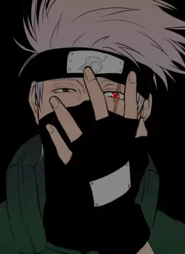

Satoru Gojo (五ご条じょう悟さとる Gojō Satoru?) is one of the main protagonists of the Jujutsu Kaisen series. He is a special grade jujutsu sorcerer and widely recognized as the strongest in the world. Satoru is the pride of the Gojo Family, the first person to inherit both the Limitless and the Six Eyes in four hundred years. He works as a teacher at the Tokyo Jujutsu High and uses his influence to protect and train strong young allies.Satoru is a complex individual. He is normally seen to be nonchalant and playful towards his students, close colleagues, and friends. However, he is unsympathetic and cruel towards sorcerer executives, an example being his blatant disrespect towards Principal Gakuganji, and his enemies.
Kakashi Hatake (はたけカカシ, Hatake Kakashi) is a shinobi of Konohagakure's Hatake clan. Famed as Kakashi of the Sharingan (写輪眼のカカシ, Sharingan no Kakashi), he is one of Konoha's most talented ninja, regularly looked to for advice and leadership despite his personal dislike of responsibility. To his students on Team 7, Kakashi emphasises the importance of teamwork; he himself received this lesson, along with the Sharingan, from his childhood friend, Obito Uchiha. After the Fourth Shinobi World War, Kakashi becomes Konoha's Sixth Hokage (六代目火影, Rokudaime Hokage, literally meaning: Sixth Fire Shadow).

Manjiro Sano (佐野さの 万まん次じ郎ろう, Sano Manjirō?), or Mikey (マイキー, Maikī?), is the leader (総長, Sōchō?) of the Kanto Manji Gang. He is the deuteragonist of the Tokyo Revengers manga series as well as its anime adaptation.Mikey is a teenager of below average height with pitch black piercing eyes and long blond hair that is only tied at the top with the hair on the sides moving freely.In his second appearance as an adult, Mikey appears with short black hair and a dragon tattoo on his neck similar to the ones Draken and Takashi Mitsuya have. He rides a CB205T owned previously by his brother, Shinichiro Sano.